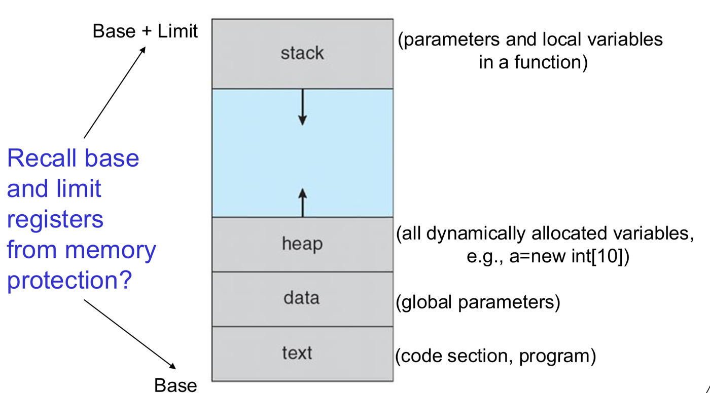
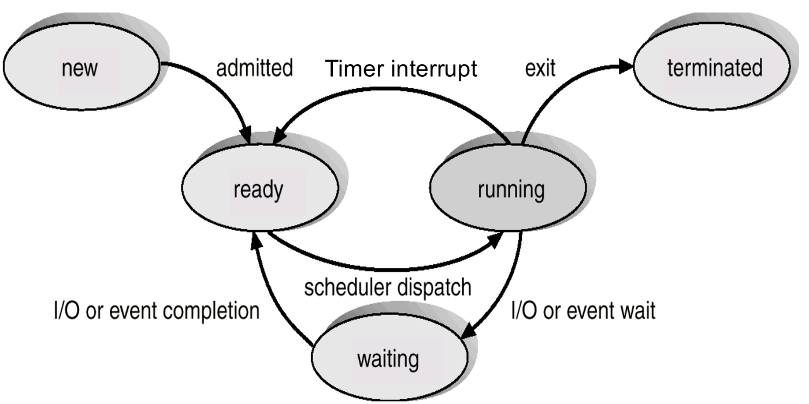
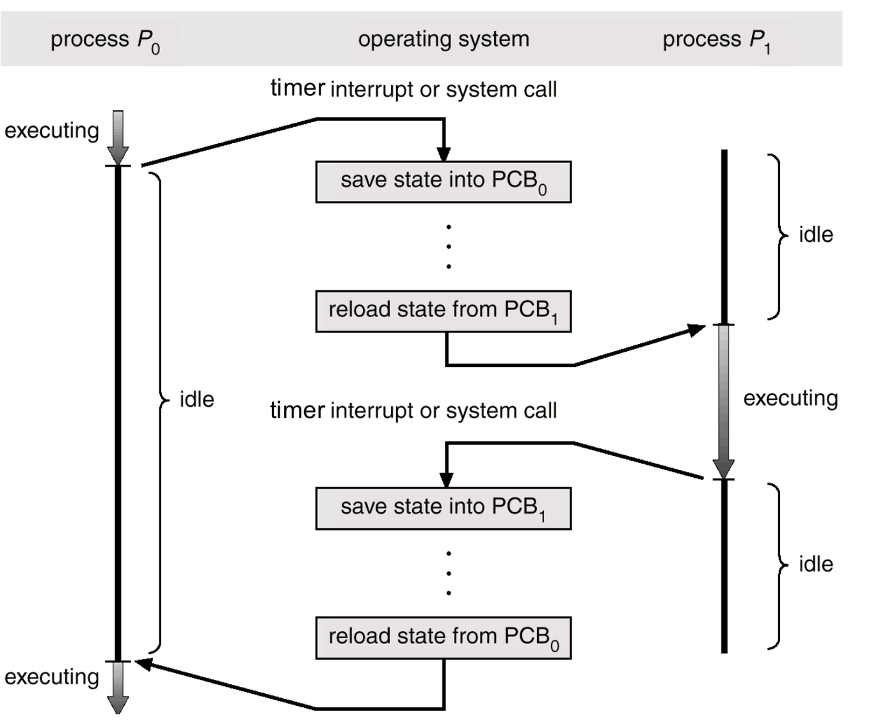
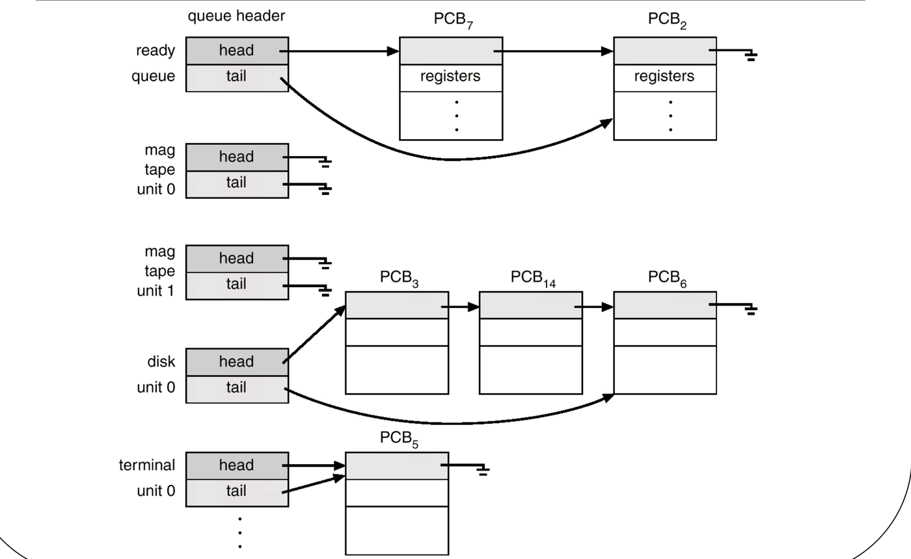
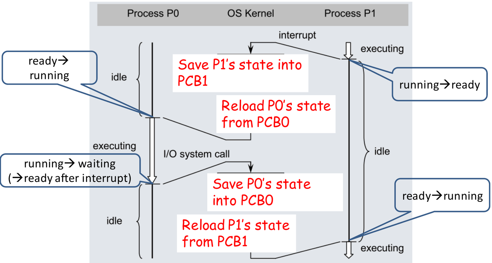
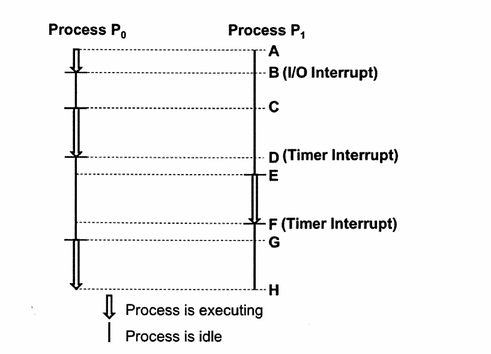
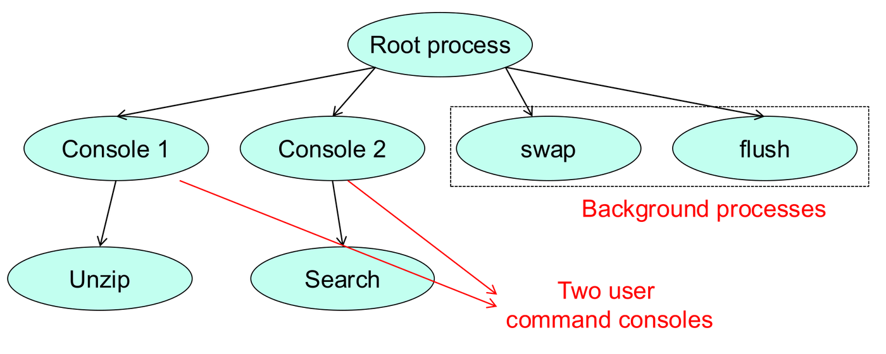
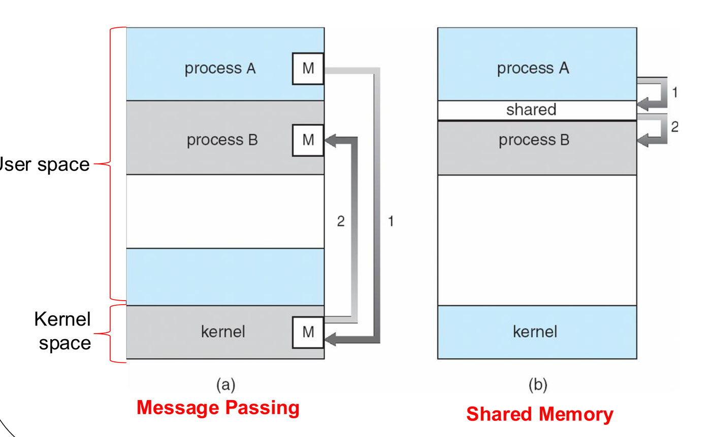
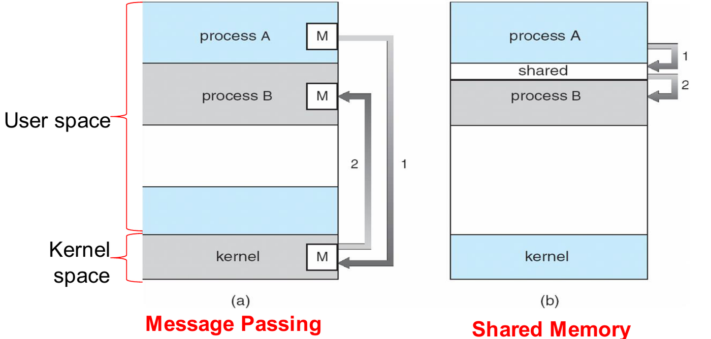
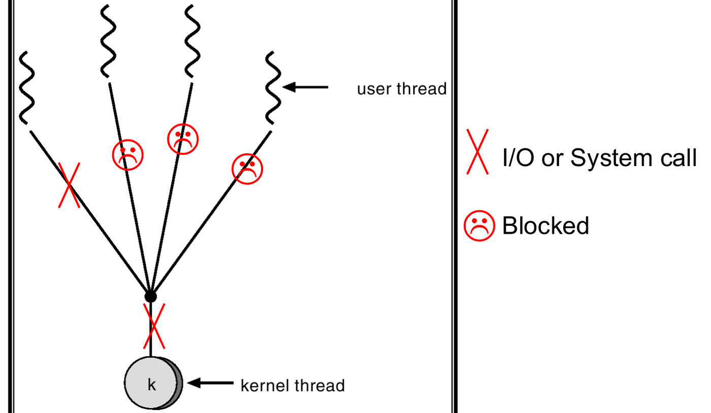

An operating system manages computing by dividing work into independent units of execution. The foundational unit of work is the process.
This chapter examines the internal structure of a process, how the operating system tracks processes through state transitions and context switches, how processes coordinate via interprocess communication (IPC), and how threads provide lightweight concurrency within a single process.
1. What a Process Is: Memory Layout
A program is a passive entity—an executable file stored on disk containing a list of machine instructions. A process is an active entity—a program in execution. Running the same executable binary twice instantiates two distinct processes with independent address spaces.
The operating system allocates each process a dedicated memory image structured into four distinct segments:

| Memory Segment | Stored Content | Size Characteristics | Shared Across Threads? |
|---|---|---|---|
| Text | Executable machine code instructions. | Fixed at compile time; typically read-only. | Yes |
| Data | Global and static variables initialized before runtime. | Fixed size during execution. | Yes |
| Heap | Dynamically allocated memory requested at runtime
(e.g. malloc() in C, new in Java/C++). |
Grows upward toward higher addresses as memory is allocated. | Yes |
| Stack | Function activation records, local variables, parameters, and return addresses. | Grows downward toward lower addresses on function calls; shrinks on return. | No (Each thread gets a private stack). |
[!NOTE] The heap and stack grow toward each other into the unallocated space between them. The physical base and limit registers configured by the OS ensure memory references do not overflow outside this allocated region.
Tutorial 2 Q2: Data vs. Stack Memory Segments
Question: What are two main differences between the data and stack regions of a process memory?
Answer:
- Dynamic Sizing: The size of the data segment is fixed when the program loads into memory, whereas the stack segment dynamically expands and contracts as functions are called and return.
- Variable Scope and Lifetime: The data segment stores global and static variables that persist throughout the entire execution of the process. The stack segment stores local variables, function parameters, and return addresses whose lifetimes are tied strictly to individual function invocations.
AY15/16 S2 Q1c(ii): Tracing Memory Changes in Recursive Execution
Question: Describe how the four memory sections of the process (text, data, heap, and stack) change during the execution of this program:
void main() {
f1(5);
}
void f1(int times) {
if (times > 0) {
int pid = fork();
printf("%d\n", pid);
f1(times - 1);
} else {
printf("done\n");
}
}Answer:
- Text Segment: Remains completely unchanged. The executable instructions are static and read-only.
- Data Segment: Remains empty /
static. The program defines no global or static variables
(
pidandtimesare local variables). - Heap Segment: Remains empty /
unchanged. No dynamic memory allocation (
mallocornew) is performed. (Creating a new process viafork()instantiates a separate process address space; it does not allocate heap memory). - Stack Segment: Grows and shrinks
dynamically. Each recursive invocation of
f1()pushes a new activation frame (times, local variablepid, return address) onto the stack fromf1(5)down tof1(0). As the recursion unwinds, these frames are popped off in reverse order.
2. Process Life Cycle and State Transitions
As a process executes, its execution status changes dynamically. On a single-core processor, only one process can be executing at any given instant. All other resident processes wait in operating system scheduler queues.

The Five Canonical Process States
- New: The process is currently being instantiated (the OS is allocating memory and initializing its PCB).
- Ready: The process is fully prepared to execute in memory and is waiting exclusively for the CPU scheduler to allocate processor time.
- Running: The process’s instructions are actively executing on physical CPU core(s).
- Waiting (Blocked): The process cannot execute until an external event or I/O operation completes (e.g. disk read, network packet, child termination).
- Terminated: The process has finished execution and is releasing its allocated resources.
Process State Transitions
| State Transition | Cause / Trigger Event |
|---|---|
| New Ready | Admitted: The OS completes process initialization and adds it to the ready queue. |
| Ready Running | Scheduler Dispatch: The CPU scheduler selects this process to execute next. |
| Running Ready | Interrupt (Preemption): An external hardware interrupt arrives (most commonly a timer interrupt signaling time-slice expiration) or a higher-priority process arrives. |
| Running Waiting | I/O or Event Wait: The process executes a blocking
system call (e.g. read(), wait()). |
| Waiting Ready | I/O / Event Completion: The peripheral device controller signals event completion via an interrupt. |
| Running Terminated | Exit: The process completes execution or encounters a fatal runtime fault. |
[!IMPORTANT] Two High-Yield Process State Traps:
- Waiting Running NEVER Happens: A process completing an I/O operation moves to Ready, never directly to Running. It must wait in the ready queue until the CPU scheduler dispatches it.
- Ready Waiting: A Ready process has all required resources and waits only for the CPU. A Waiting process is blocked on an external event and cannot run even if the CPU is completely idle.
3. Process Control Block (PCB) and Context Switching
The Process Control Block (PCB)
The operating system manages each active process through a dedicated data structure called the Process Control Block (PCB) (also known as a task control block):

- Process State: Current state (New, Ready, Running, Waiting, Terminated).
- Program Counter (PC): Memory address of the next instruction to execute.
- CPU Registers: Accumulators, index registers, stack pointers, and condition codes.
- CPU-Scheduling Information: Process priority, pointers to scheduling queues.
- Memory-Management Information: Base and limit registers, or page/segment tables.
- Accounting Information: CPU execution time used, time limits, process ID (PID).
- I/O Status Information: List of open file descriptors and allocated I/O devices.
[!WARNING] Where PCBs Reside: All PCBs reside strictly in Kernel Memory Space. User programs cannot access or alter PCBs directly; modifying scheduling priorities or file descriptors requires privileged kernel system calls.
The Context Switch
A context switch occurs when the CPU scheduler stops executing one process and resumes execution of another:

- State Preservation: The hardware and OS save the CPU registers and Program Counter of the currently executing process () into its PCB ().
- State Transition: The OS updates ’s status (to Ready if preempted, or Waiting if blocked on I/O).
- Process Selection: The scheduler selects the next process () from the ready queue.
- State Restoration: The OS loads the processor context from into physical CPU registers.
- Execution: The CPU switches back to user mode and begins executing instructions for .
[!IMPORTANT] Context Switch is Pure Overhead: During a context switch, the computer does no useful application work. Context switch latency depends on hardware architecture, register set sizes, and cache flushing overhead.
Process Scheduling Queues and Schedulers
Processes migrate through operating system queues represented as linked lists of PCBs:
- Ready Queue: Holds all resident processes in the Ready state waiting for CPU allocation.
- Device (I/O) Queues: Each peripheral device maintains a dedicated queue of processes blocked waiting for that specific hardware interface.

| Scheduler | Frequency of Execution | Primary Role |
|---|---|---|
| Short-Term Scheduler (CPU Scheduler) | Extremely frequent (e.g. every 10–100 ms). | Selects which Ready process from the ready queue executes next on the CPU. Must be exceptionally fast. |
| Medium-Term Scheduler (Swapper) | Intermediate frequency (triggered by memory pressure). | Removes partially executed processes from RAM to secondary storage (swapping) to reduce memory contention, and restores them when load decreases. |
| Long-Term Scheduler (Job Scheduler) | Infrequent (seconds/minutes). | Selects jobs from disk spool pools and loads them into memory as New Ready. Controls the degree of multiprogramming (total resident processes in RAM). |
Step-by-Step Method: Tracing State Transitions and Context Switches
When analyzing execution timelines involving multiple processes (e.g. ):
- Identify Preemption Events:
- A timer interrupt forces the running process from Running Ready.
- A blocking I/O system call forces the running process from Running Waiting.
- An I/O-completion interrupt transitions the blocked process from Waiting Ready.
- Track PCB Operations During Gaps:
- For any switch between
and
:
- Step 1: Save state of into .
- Step 2: Load state of from .
- For any switch between
and
:
- Dispatching Rules:
- The short-term scheduler dispatches only from the Ready Queue.
- If two processes become ready simultaneously, apply the queue tie-breaking order (standard convention: newly arrived processes preempted processes processes returning from I/O).
Tutorial 2 Q4: Tracing Context Switch Operations
Question: The figure below shows the execution of processes P0 and P1 in a multiprogramming system. (a) Identify state transitions of each process. (b) Describe operations A, B, C, and D performed by the kernel.


Solution:
(a) State Transitions:
- Process
:
- When the interrupt arrives: Running Ready.
- When dispatched at point D: Ready Running.
- Process
:
- When dispatched at point B: Ready Running.
- When issuing the I/O system call: Running Waiting. (It returns to Ready later when the I/O finishes).
(b) Kernel Operations:
- A: Save processor state of into .
- B: Reload saved state of from into CPU registers.
- C: Save processor state of into .
- D: Reload saved state of from into CPU registers.
AY19/20 S1 Q1c: Complete Execution Timeline Trace
Question: Two processes P0 and P1 execute across 7 time instants (A through G). At instant B, an I/O interrupt is received. At instant D, a timer interrupt is received. (i) Describe with justifications all state transitions for each process. (ii) Identify durations when the OS kernel executes and explain its operations.

Solution:
(i) State Transitions:
- Instant A: : Ready Running (P0 is the sole ready process dispatched by scheduler).
- Instant B: : Running Waiting (Initiates I/O request).
- Instant C: : Waiting Ready Running (I/O completes; P0 is the only ready process, immediately dispatched).
- Instant D:
- : Running Ready (Preempted by timer interrupt; placed at tail of ready queue).
- : New Ready (P1 arrives and enters ready queue ahead of preempted P0).
- Instant E: : Ready Running (Scheduler dispatches head of ready queue).
- Instant F: : Running Ready (Preempted by timer interrupt; yields CPU to P0).
- Instant G: : Ready Running (Dispatched by scheduler).
(ii) Kernel Executions & Operations:
- The OS kernel executes at every transition instant (A, B, C, D, E, F, G).
- Operations: Saving context to outgoing PCB, updating process state in PCB, managing ready/waiting queues, running ISRs for I/O and timer interrupts, and restoring context from incoming PCB. All operations require kernel mode because PCBs reside in protected kernel memory.
AY Past-Paper Checks: PCBs & Schedulers
- AY16/17 S1 Q2a(ii): When a context switch occurs from P0 to P1, register values are loaded from the PCB of P0 to the PCB of P1. False. Registers are saved from CPU to PCB0, and loaded from PCB1 to CPU. Values never transfer between PCBs.
- AY16/17 S1 Q2a(iv): Base and limit registers in a PCB are used for memory protection. True. Loaded into hardware registers on dispatch to enforce bounds checks.
- AY18/19 S2 Q1a(iv): The short-term scheduler considers all processes waiting for CPU and I/O devices. False. The short-term scheduler selects only from the Ready queue (processes waiting for CPU). Processes waiting for I/O are in Waiting state and cannot run.
- AY16/17 S2 Q1d: Ready queue singly linked list
pointers (
head,tail) under Round Robin after timer interrupt with listPCB1 -> PCB2 -> PCB3:- The running process
is preempted and appends to
tail. atheadis dispatched. - Updated list:
PCB2 -> PCB3 -> PCB0, whereheadpoints to PCB2 andtailpoints to PCB0.
- The running process
is preempted and appends to
4. Process Creation, Synchronization, and Termination
Process Hierarchy: The Process Tree
Operating systems organize processes in a hierarchical tree. A
parent process creates child processes
via the fork() system call:

- Resource Sharing Models:
- Parent and child share all resources.
- Children share a subset of the parent’s resources.
- Parent and child share no resources (child receives dedicated allocations).
- Execution Options:
- Parent and child continue executing concurrently.
- Parent executes
wait()(orjoin()) to suspend execution until the child terminates.
fork() Execution
Mechanics
When a process executes fork():
- The OS creates a new, duplicate address space and PCB for the child.
- The child duplicates the parent’s memory image (text, data, heap, stack) and inherits open file descriptors.
- Both processes resume execution at the instruction
immediately following
fork(). - The return value of
fork()differentiates parent from child:- In the Parent: Returns the child’s PID ().
- In the Child: Returns .
- On failure: Returns .
Process Termination:
exit() vs. abort()
exit()(Self-Termination): Invoked by the process when it finishes executing its final statement, passing a status integer back to its waiting parent.abort()(Forced Termination by Parent): Invoked by a parent process to forcibly terminate a child (e.g. child exceeded resource limits, or child’s task is no longer required).
AY18/19 S2 Q1c: The Fork-Join Model and Missing Join Calls
Question: Explain what is meant by the “fork-join” processing model. Devise an example with pseudo-code to illustrate the difference between: 1) all required join() calls are present; and 2) some join() calls are missing.
Answer:
- Fork-Join Model: A parallel processing pattern
where an execution flow splits into concurrent independent branches
(
fork), and later synchronizes at a barrier (join) before proceeding sequentially.
Example Code:
int main() {
Thread t1, t2;
int count = 0;
fork(&t1, &count, 1); // t1 increments count
fork(&t2, &count, 1); // t2 increments count
join(&t1);
join(&t2);
printf("%d\n", count);
}- Case 1 (All joins present): The parent waits for
both threads to finish before printing. The output is deterministically
2. - Case 2 (A join is missing): If
join(&t2)is omitted, the parent may executeprintfbefore threadt2completes its write. Depending on thread interleaving, the output may print1or2(non-deterministic race condition).
AY Past-Paper Checks: Process Creation & Termination
- AY17/18 S1 Q1a(iii): The
abort()system call is used by a child process to terminate its own execution. False. A child terminates itself usingexit(). Theabort()system call is invoked by a parent to forcibly kill its child. - AY15/16 S2 Q1c(i): Identify a line causing a
mode switch in recursive fork code.
Line containing
fork()orprintf(). Both require kernel system calls, triggering hardware traps from user mode to kernel mode.
5. Interprocess Communication (IPC)
Processes executing concurrently are either independent (cannot affect or be affected by other processes) or cooperating (share data or state). Cooperating processes communicate via two foundational models:

| Characteristic | Shared Memory | Message Passing |
|---|---|---|
| Mechanism | A common memory region is mapped into both processes’ address spaces. | The OS provides communication primitives: send(message)
and receive(message). |
| Kernel Involvement | Only during initial setup. Once memory is mapped, read/write accesses occur at hardware memory speed with zero system calls. | Every message requires kernel intervention via system calls. |
| Memory Overhead | Low: Data exists in a single shared location. | Higher: Data is copied multiple times (User Sender Kernel Buffer User Receiver). |
| Synchronization | Processes must manage mutual exclusion and race conditions themselves (e.g. via Semaphores). | Handled automatically by the kernel’s message queue buffers. |
| Best Suited For | High-speed, large-volume data transfers on the same physical host. | Small-to-medium transfers across processes or distributed network hosts. |

Direct vs. Indirect Message Passing
- Direct Communication: Senders and receivers
explicitly name each other:
send(P, &message): Send a message to process .receive(Q, &message): Receive a message from process .
- Indirect Communication: Messages are sent to and
received from shared mailboxes (ports):
send(mailbox_A, &message),receive(mailbox_A, &message).- Multiple processes can send to or read from the same mailbox.
Tutorial 2 Q1: True/False Process Concepts and IPC
Question: Justify whether true or false: (a) A ready process waiting for access to the CPU is in the “waiting” state. (b) When any hardware interrupt arrives, the running process is moved to “ready”. (c) The “wait()” system call is generally used by a child process to wait for instructions from a parent. (d) Message passing IPC consumes less memory than shared memory IPC.
Answer:
- (a) False. It is in the Ready state. The Waiting state is reserved for processes blocked on external events or I/O completions.
- (b) True. The running process is moved to Ready to yield the processor to the Interrupt Service Routine (ISR).
- (c) False.
wait()is invoked by the parent process to suspend execution until its child terminates and collects its exit code. - (d) False. Message passing consumes more memory than shared memory because messages are duplicated into kernel buffers before delivery to the receiver, whereas shared memory exists in one place.
6. Threads and Multithreading Models
Thread Definition and Anatomy
A thread is the basic unit of CPU utilization (often called a lightweight process). A traditional “heavyweight” process has a single thread of execution.


| Shared by All Threads in a Process | Private to Each Individual Thread |
|---|---|
| • Text Segment (Executable code) • Data Segment (Global variables) • Heap Segment (Dynamic memory) • OS Resources (Open files, sockets, signals) |
• Thread ID (TID) • Program Counter (PC) • Register Set • Dedicated Stack (Local variables, call stack) |
[!NOTE] Why Multithreading is Superior to Multiple Processes:
- Resource Sharing: Threads share memory by default; processes require complex IPC.
- Economy: Creating a thread and switching between threads within the same process is an order of magnitude faster than process creation/context switching (no memory address space or page table reloads required).
- Responsiveness: In an interactive app or web server, a background thread can perform slow disk I/O while the main thread continues servicing user requests.

Multithreading Models: User vs. Kernel Threads
Operating systems distinguish between User Threads (managed in user space by thread libraries without kernel awareness) and Kernel Threads (managed and scheduled directly by the OS kernel):


| Model | Mapping Architecture | Concurrency & Blocking Behavior | Primary Trade-Off |
|---|---|---|---|
| Many-to-One | Many user threads map to a single kernel thread. | Poor: If one user thread makes a blocking system call, the entire process blocks because the kernel thread blocks. | Fast user-space thread management; cannot leverage multiple CPU cores. |
| One-to-One | Each user thread maps to an independent kernel thread. | High: One thread blocking on I/O does not affect other threads. True multi-core parallelism. | High kernel overhead: creating too many user threads creates too many kernel threads, straining OS resources. (Standard in Linux & Windows). |
| Many-to-Many | Multiplexes many user threads onto a smaller or equal number of kernel threads. | High: Blocking threads do not block the entire process; threads execute across multiple cores. | Complex kernel-space scheduler implementations. |
[!TIP] Why No “One-to-Many” Model? A single user thread represents one sequential execution path with one Program Counter. It cannot execute on multiple kernel threads simultaneously; allocating extra kernel threads to one user thread wastes system resources with zero concurrency benefit.
Tutorial 2 Q3 & AY18/19 S1 Q1a(i): Thread Models and Concurrency
- Tutorial 2 Q3 (Single vs. Multi-threaded): A single-threaded process has only one execution context (one PC, one stack, one register set). A multi-threaded process contains multiple concurrent execution streams sharing text, data, and heap, but each possessing a private stack, registers, and Thread Control Block (TCB). Multi-threading improves throughput and responsiveness.
- AY18/19 S1 Q1a(i): In many-to-one mapping, when a running logical thread blocks, the CPU scheduler can simply switch to one of the other mapped logical threads. False. Because all user threads share a single kernel thread, the kernel views the entire process as one entity. When a blocking system call occurs, the kernel thread blocks, freezing all other user threads in that process.